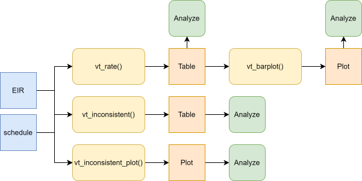
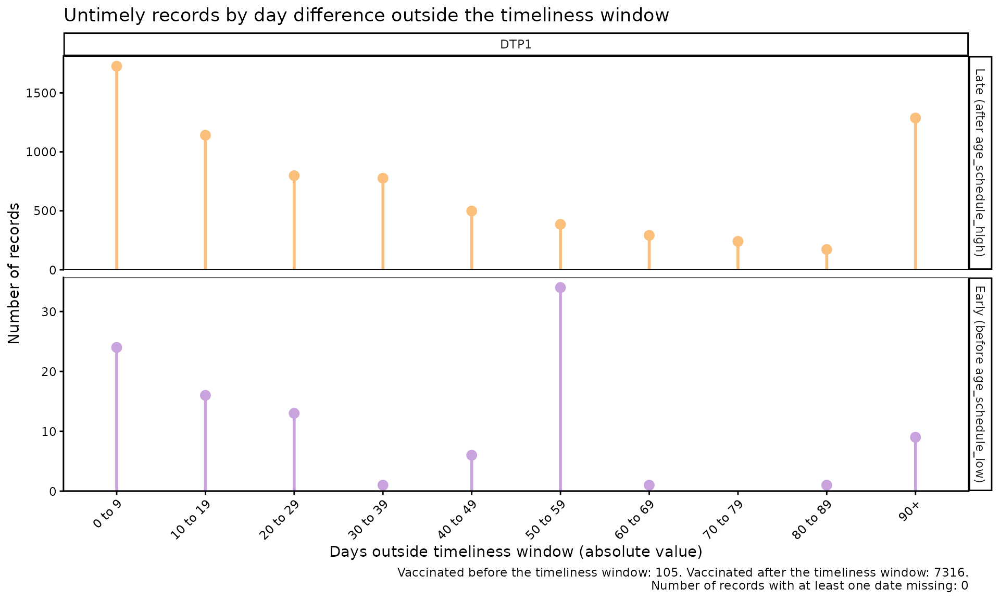
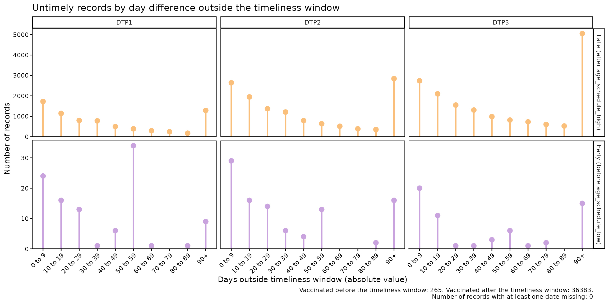
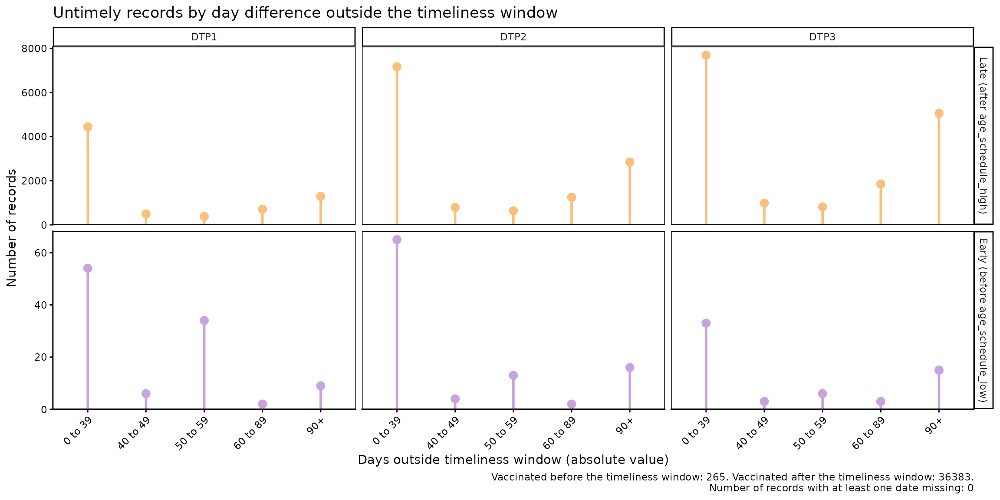
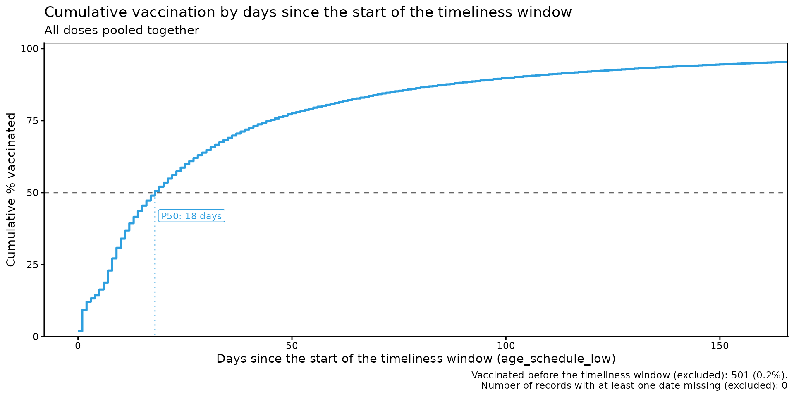
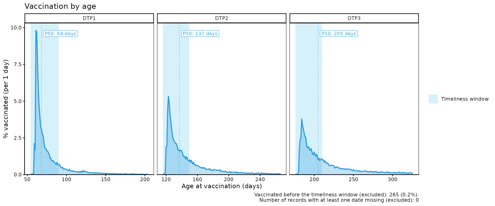
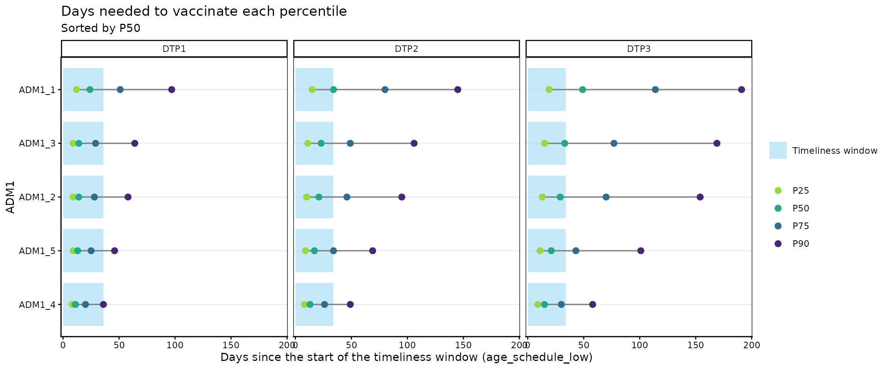
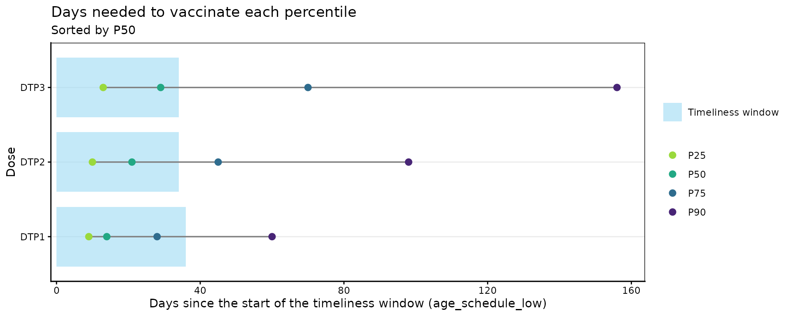

Oportunidad de vacunación
OPS/CIM
8 de octubre de 2026
Source:vignettes/articles/es/vaccination_timeliness_es.Rmd
vaccination_timeliness_es.RmdFundamento
El calendario de vacunación de un país se establece considerando las características de cada vacuna, la historia natural de la enfermedad que se busca prevenir, las características de la persona que la va a recibir, el acceso de la población a los vacunatorios y su disposición a vacunarse (o a vacunar a sus hijos).
Con la vacunación se intenta disminuir la mayor cantidad posible de carga de enfermedad, adelantándose al periodo de la vida en que el riesgo de gravedad y muerte por dicha enfermedad es mayor. Al mismo tiempo, el calendario debe considerar la capacidad de la vacuna de generar inmunidad y la duración de esta, condicionada (sobre todo en el primer año de vida) por la madurez del sistema inmunológico. Estos factores determinan, por ejemplo, la necesidad de más de una dosis, los refuerzos a lo largo del curso de vida, la compatibilidad entre vacunas administradas simultáneamente y los tiempos mínimos entre una dosis y otra.
Para obtener el mayor beneficio del calendario establecido por las autoridades sanitarias, el cumplimiento por parte de la población es fundamental, no solo completando el esquema, sino haciéndolo de manera oportuna. Conocer la oportunidad de vacunación, es decir, cuán ajustadas al calendario se administran las vacunas, permite:
- entender las coberturas y su impacto en la epidemiología de la enfermedad,
- monitorear la cadena de suministro de vacunas e insumos,
- pesquisar problemas de acceso o de disposición a vacunar en ciertas comunidades y,
- a través de acciones a distintos niveles, prevenir futuros abandonos.
Por tanto, el objetivo de este indicador es analizar la oportunidad de vacunación en la población, es decir, el tiempo que transcurre entre la edad de elegibilidad para una determinada dosis de vacuna y la ocurrencia de la vacunación, usando información nominal proveniente de los Registros Nominales de Vacunación electrónicos (RNVe).
Nota
- Todas las funciones utilizadas para el análisis de oportunidad de vacunación dentro de immunABC comienzan con el prefijo
vt_(del inglés vaccination timeliness).
Análisis no probabilístico
El análisis no probabilístico mide el tiempo que transcurre entre la edad indicada para una determinada dosis y su administración. Se realiza a partir de la base de datos de vacunados del RNVe, por lo que se mide de manera retrospectiva sobre el total de individuos que recibieron la dosis. Se estima la proporción de individuos que recibe la vacuna de forma oportuna y la que lo hace de forma no oportuna. Luego, se estratifica a quienes no recibieron la vacuna de manera oportuna según el tiempo transcurrido fuera del periodo de oportunidad.
Definiciones operativas
- Vacunación oportuna: aquella que se realiza dentro del rango de tiempo definido por el país como estándar de oportunidad para cada dosis de una vacuna.
- Porcentaje de vacunación oportuna: proporción de la población que recibió una dosis dentro de su periodo de oportunidad, sobre el total de la población que recibió esa dosis.
- Distribución según tiempo transcurrido (demora): estratificación de los individuos que no recibieron la dosis oportunamente, distribuidos en categorías de tiempo definidas por el país.
Definiciones requeridas
Antes de realizar el análisis, el país debe definir:
- Vacunas a evaluar: cada dosis de vacuna se analiza individualmente. Posteriormente se puede hacer un análisis agregado de varias dosis.
-
Oportunidad por vacuna: para cada dosis se define
el periodo que se considera oportuno, con una edad mínima y una edad
máxima, de acuerdo con las normas del país. En immunABC, este periodo
corresponde a las columnas
age_schedule_lowyage_schedule_highdel esquema de vacunación. - Categorías de tiempo: rangos de días para distribuir las vacunaciones no oportunas. El país define los rangos, aunque el paquete incluye rangos predefinidos.
-
Año a evaluar: queda a discreción del país analizar
por cohorte de nacimiento o por año calendario. Las funciones
vt_permiten filtrar por cohorte de nacimiento con el parámetrobirth_cohorts. - Nivel de desagregación geográfica: nacional (ADM0), primer nivel subnacional (ADM1) o segundo nivel subnacional (ADM2).
- Periodo mínimo de observación: cada individuo incluido en el análisis debe al menos haber completado el periodo de oportunidad de la dosis evaluada.
Advertencia
immunABC no verifica el periodo mínimo de observación. Si se incluyen cohortes de nacimiento que aún no completan el periodo de oportunidad a la fecha de extracción de los datos, solo aparecerán en el RNVe quienes ya fueron vacunados, lo que sobreestima la oportunidad. Elija
birth_cohortsque hayan tenido tiempo suficiente para completar el periodo de oportunidad de las dosis analizadas.
Características del análisis
- Es un análisis transversal: se mide el número de días entre la fecha de nacimiento y la fecha de administración de la dosis, y se compara con el estándar de oportunidad definido por el país. Si la edad al momento de la vacunación está dentro del periodo de oportunidad, la dosis se clasifica como oportuna; si es anterior o posterior, se clasifica como no oportuna.
- Es independiente del tamaño de la población objetivo: el denominador son todos los individuos que recibieron la dosis evaluada.
- Requiere el calendario de vacunación con la especificación del estándar de oportunidad.
- Usa el lugar de residencia para los análisis subnacionales.
Análisis probabilístico
El análisis probabilístico estima la incidencia acumulada del evento “administración de una dosis de vacuna”, es decir, la probabilidad de que una determinada población reciba la dosis a medida que transcurre el tiempo (desde que se vuelve elegible para recibirla). A partir de esta curva se estima la probabilidad de ser vacunado de forma oportuna y el tiempo necesario para vacunar a distintos percentiles de la población.
Nota
Idealmente, este análisis considera a toda la población que debería recibir la vacuna (por ejemplo, a partir del registro de nacidos vivos). En immunABC se trabaja con la base de vacunados del RNVe, es decir, solo con los individuos que recibieron la dosis analizada. En este caso, la probabilidad final siempre será del 100%, lo que sobreestima la probabilidad real de vacunación de la población.
Definiciones operativas
-
Vacunación oportuna: al igual que en el análisis no
probabilístico, aquella que se realiza dentro del periodo de oportunidad
definido por el país para cada dosis. En este análisis, el día
0 (inicio del periodo de observación) corresponde al límite
inferior del periodo de oportunidad (
age_schedule_low), y no se incluyen las dosis administradas antes de ese día. - Probabilidad de ser vacunado al día t: incidencia acumulada de vacunación al día t. Cuando t corresponde al límite superior del periodo de oportunidad, se obtiene la probabilidad de la población de ser vacunada de manera oportuna.
- Tiempo necesario para vacunar a un porcentaje de la población: número de días desde el inicio del periodo de oportunidad que toma vacunar a un determinado percentil de la población (por ejemplo, 25%, 50% y 75%).
Definiciones requeridas
- Vacunas a evaluar: cada dosis se analiza individualmente, ya que cada una tiene su propio periodo de oportunidad.
-
Oportunidad por vacuna: igual que en el análisis no
probabilístico (entre
age_schedule_lowyage_schedule_high). - Percentiles de la población: se recomienda estimar al menos los tiempos para 25%, 50% y 75%.
- Año a evaluar: se sugiere usar una cohorte de nacimiento. immunABC también permite combinar varias cohortes (ver la advertencia a continuación).
- Nivel de desagregación geográfica: ADM0, ADM1 o ADM2.
Advertencia
Este análisis sigue la curva de vacunación mucho más allá del periodo de oportunidad, por lo que el periodo de observación necesario es mayor. Si se incluyen cohortes de nacimiento que a la fecha de extracción de los datos no han completado ese periodo de observación, solo aparecerán en el RNVe quienes se vacunaron antes de esa fecha. Quienes se vacunen después aún no aparecen, por lo que la curva puede mostrar una vacunación más rápida de lo que realmente es. Para mitigar esto, elija cohortes de nacimiento que hayan completado el periodo de observación, o excluya las cohortes incompletas.
Características del análisis
- Es un análisis de incidencia acumulada, que corresponde al complemento de la función de sobrevida de Kaplan-Meier. Kaplan-Meier estima la probabilidad de que un evento no suceda en el tiempo; su complemento entrega la probabilidad de que sí suceda, en este caso, la vacunación.
- El tiempo se cuenta desde que el individuo es elegible para la dosis
(a partir de
age_schedule_low). Todos los vacunados hasta el límite superior del periodo de oportunidad se consideran oportunos. - Es independiente del tamaño de la población: el denominador es el total de registros que ingresan al análisis.
- Requiere el calendario de vacunación con la definición del periodo de oportunidad de cada dosis.
- Usa el lugar de residencia para los análisis subnacionales.
Cálculo del indicador
La incidencia acumulada de vacunación al día t es el complemento de la función de sobrevida de Kaplan-Meier:
donde es la probabilidad de haberse vacunado hasta el día t y es la probabilidad de no haberse vacunado hasta el día t. Como el RNVe solo contiene a individuos vacunados (no hay censura), es simplemente el porcentaje acumulado de registros vacunados hasta el día t:
Nota
Los registros vacunados antes del periodo de oportunidad (antes del día 0) y aquellos con alguna fecha faltante se excluyen tanto del numerador como del denominador, y se reportan aparte. Por lo tanto, evaluada en el último día del periodo de oportunidad no es igual al porcentaje
TIMELYdevt_rate(), que sí incluye en su denominador a los vacunados antes del periodo.
Glosario
Divisiones político-geográficas
A lo largo de esta viñeta se hace referencia a distintos niveles de división político-geográfica. Estos niveles son definidos por cada país o territorio y pueden recibir nombres diferentes. immunABC no depende de esos nombres locales; por eso, el usuario debe recodificar sus variables para ajustarlas a la estructura que utiliza el paquete.
En concreto, immunABC puede distinguir tres niveles administrativos que, listados del nivel superior al inferior, son: ADM0, ADM1 y ADM2.
- ADM0: El país. Este es el nivel administrativo más alto.
- ADM1: La primera subdivisión geográfica del país. ADM0 contiene varias subdivisiones ADM1.
- ADM2: La segunda subdivisión geográfica del país. Cada ADM1 contiene varias subdivisiones ADM2.
Categorías de oportunidad
| Categoría | Significado |
|---|---|
TIMELY |
Oportuna: la edad al momento de la vacunación está dentro de
[age_schedule_low, age_schedule_high]. |
UNTIMELY_EARLY |
No oportuna (temprana): la edad al momento de la vacunación es menor
que age_schedule_low (antes del periodo de
oportunidad). |
UNTIMELY_LATE |
No oportuna (tardía): la edad al momento de la vacunación es mayor
que age_schedule_high (después del periodo de
oportunidad). |
DATE_MISSING |
date_vax o date_birth es
NA. |
Uso
Cargar los datos
Las funciones de este módulo requieren su RNVe y un esquema de vacunación con los periodos de oportunidad, ambos en el formato estándar de immunABC.
RNVe
El conjunto de datos immunABC::immunABC.EIR proporciona
una tabla nominal simulada con eventos individuales de vacunación de un
RNVe. Cada fila corresponde a una vacunación de una persona.
immunABC.EIR %>% head() %>% kable(caption = "Ejemplo de Registro Nominal de Vacunación electrónico")| ID | date_birth | date_vax | ADM1_residence | ADM2_residence | ADM1_occurrence | ADM2_occurrence | dose |
|---|---|---|---|---|---|---|---|
| 191997 | 2023-08-08 | 2023-12-26 | ADM1_4 | ADM2_4_35 | ADM1_4 | ADM2_4_35 | DTP2 |
| 212189 | 2023-12-20 | 2023-12-26 | ADM1_5 | ADM2_5_61 | ADM1_5 | ADM2_5_61 | BCG RN |
| 118063 | 2022-09-15 | 2023-12-26 | ADM1_2 | ADM2_2_5 | ADM1_2 | ADM2_2_5 | DTP1 |
| 118063 | 2022-09-15 | 2023-12-26 | ADM1_2 | ADM2_2_5 | ADM1_2 | ADM2_2_5 | YFV1 |
| 130751 | 2022-10-27 | 2023-12-12 | ADM1_5 | ADM2_5_55 | ADM1_5 | ADM2_5_55 | YFV1 |
| 136532 | 2021-09-21 | 2023-12-26 | ADM1_3 | ADM2_3_12 | ADM1_3 | ADM2_3_12 | SRP1 |
-
ID: Número único de identificación de la persona. - Fecha de nacimiento (
date_birth): Fecha de nacimiento de la persona. - Fecha de vacunación (
date_vax): Fecha del evento de vacunación. -
ADM1_residence/ADM2_residence: Primer y segundo nivel administrativo geográfico de residencia. - Dosis (
dose): Variable combinada que representa el tipo de vacuna y su número de dosis correspondiente (p. ej., DTP1).
Advertencia
- Las funciones de este módulo calculan la edad al momento de la vacunación como
date_vax - date_birth. Sidata.EIRcontiene registros dondedate_vaxocurre antes quedate_birth(es decir, una edad de vacunación negativa), esto señala un error de consistencia de fechas. Cuando esto ocurre, las funcionesvt_emiten una advertencia que remite al módulo de comparación de consistencia de fechas para identificar y resolver esos registros primero.- Las funciones de este módulo cuentan registros de vacunación, no individuos. Si
data.EIRcontiene registros duplicados (el mismoIDydoseregistrados más de una vez), ese individuo se cuenta más de una vez tanto en el numerador como en el denominador. immunABC no elimina duplicados, por lo que usted debe eliminarlos antes de realizar el análisis. Tenga en cuenta que queda a su criterio decidir qué registro conservar para cadaIDydose(p. ej., el de fecha de vacunación más temprana).
Esquema de vacunación
El conjunto de datos immunABC::immunABC.schedule define
el esquema nacional de vacunación, indicando para cada dosis la edad de
administración y el periodo de oportunidad, en días.
immunABC.schedule %>% kable(caption = "Ejemplo de esquema de vacunación con periodos de oportunidad")| dose | age_schedule | age_schedule_low | age_schedule_high |
|---|---|---|---|
| SRP1 | 365 | 360 | 420 |
| DTP1 | 60 | 54 | 90 |
| DTP2 | 120 | 116 | 150 |
| DTP3 | 180 | 176 | 210 |
| BCG RN | 0 | 0 | 28 |
| YFV1 | 365 | 360 | 420 |
- Dosis (
dose): Variable combinada que representa el tipo de vacuna y su número de dosis. -
age_schedule: La edad de administración de ladosecorrespondiente, en días. -
age_schedule_low: La edad mínima del periodo de oportunidad, en días. -
age_schedule_high: La edad máxima del periodo de oportunidad, en días.
Por ejemplo, en este esquema la DTP1 está indicada a los 60 días de edad y se considera oportuna si se administra entre los 54 y los 90 días de edad.
Análisis no probabilístico
Flujo de trabajo esperado
Las funciones correspondientes al análisis no probabilístico son:
-
vt_rate(): calcula el porcentaje de vacunación oportuna, agregado para varias dosis o desagregado por dosis, y por nivel geográfico. -
vt_barplot(): visualiza el resultado devt_rate()como un gráfico de barras apiladas. -
vt_inconsistent(): lista de forma individual los registros no oportunos y con fechas faltantes, indicando además el número de días fuera del periodo de oportunidad. -
vt_inconsistent_plot(): visualiza la distribución de las dosis no oportunas según el número de días fuera del periodo de oportunidad.

Nota
- En los ejemplos a continuación se analiza la cohorte de nacimiento 2022. Los datos de ejemplo incluyen vacunaciones hasta el 31 de diciembre de 2023, por lo que esta cohorte ha completado el periodo de oportunidad de las dosis administradas durante el primer año de edad.
- Al filtrar por
birth_cohortsse excluyen los registros sin fecha de nacimiento, por lo que en ese casoDATE_MISSINGsolo cuenta los registros sin fecha de vacunación.
Paso 1 — Calcular el indicador con vt_rate()
vt_rate() compara la edad al momento de la vacunación
con el periodo de oportunidad de cada dosis y devuelve el número
(n) y el porcentaje (rate) de registros
clasificados como TIMELY, UNTIMELY_EARLY,
UNTIMELY_LATE o DATE_MISSING, sobre el total
de registros (total).
Por defecto, vaccines = NULL agrega todas las dosis de
data.schedule en un único indicador. Aquí calculamos el
indicador agregado a nivel ADM1:
rate_df <- vt_rate(
data.EIR = immunABC.EIR,
data.schedule = immunABC.schedule,
geo_level = "ADM1",
birth_cohorts = 2022
)
rate_df %>% kable(digits = 2, caption = "Oportunidad de vacunación agregada por ADM1, cohorte 2022")| ADM1 | timeliness | n | total | rate |
|---|---|---|---|---|
| ADM1_1 | TIMELY | 3710 | 6167 | 60.16 |
| ADM1_1 | UNTIMELY_EARLY | 31 | 6167 | 0.50 |
| ADM1_1 | UNTIMELY_LATE | 2426 | 6167 | 39.34 |
| ADM1_2 | TIMELY | 23955 | 32632 | 73.41 |
| ADM1_2 | UNTIMELY_EARLY | 81 | 32632 | 0.25 |
| ADM1_2 | UNTIMELY_LATE | 8596 | 32632 | 26.34 |
| ADM1_3 | TIMELY | 103604 | 144709 | 71.59 |
| ADM1_3 | UNTIMELY_EARLY | 281 | 144709 | 0.19 |
| ADM1_3 | UNTIMELY_LATE | 40824 | 144709 | 28.21 |
| ADM1_4 | TIMELY | 18769 | 21712 | 86.45 |
| ADM1_4 | UNTIMELY_EARLY | 85 | 21712 | 0.39 |
| ADM1_4 | UNTIMELY_LATE | 2858 | 21712 | 13.16 |
| ADM1_5 | TIMELY | 9014 | 11323 | 79.61 |
| ADM1_5 | UNTIMELY_EARLY | 23 | 11323 | 0.20 |
| ADM1_5 | UNTIMELY_LATE | 2286 | 11323 | 20.19 |
Al especificar vaccines, los resultados se desagregan
por dosis (dose):
rate_by_dose_df <- vt_rate(
data.EIR = immunABC.EIR,
data.schedule = immunABC.schedule,
geo_level = "ADM1",
vaccines = c("DTP1", "DTP2", "DTP3"),
birth_cohorts = 2022
)
rate_by_dose_df %>% head(10) %>% kable(digits = 2, caption = "Oportunidad de vacunación por dosis y ADM1, cohorte 2022")| dose | ADM1 | timeliness | n | total | rate |
|---|---|---|---|---|---|
| DTP1 | ADM1_1 | TIMELY | 767 | 1187 | 64.62 |
| DTP1 | ADM1_1 | UNTIMELY_EARLY | 5 | 1187 | 0.42 |
| DTP1 | ADM1_1 | UNTIMELY_LATE | 415 | 1187 | 34.96 |
| DTP1 | ADM1_2 | TIMELY | 4963 | 6065 | 81.83 |
| DTP1 | ADM1_2 | UNTIMELY_EARLY | 16 | 6065 | 0.26 |
| DTP1 | ADM1_2 | UNTIMELY_LATE | 1086 | 6065 | 17.91 |
| DTP1 | ADM1_3 | TIMELY | 22380 | 27587 | 81.13 |
| DTP1 | ADM1_3 | UNTIMELY_EARLY | 53 | 27587 | 0.19 |
| DTP1 | ADM1_3 | UNTIMELY_LATE | 5154 | 27587 | 18.68 |
| DTP1 | ADM1_4 | TIMELY | 3418 | 3818 | 89.52 |
Parámetros aceptados
-
data.EIR: Tabla del RNVe en formato immunABC. -
data.schedule: Tabla del esquema de vacunación en formato immunABC. -
geo_level:"ADM0"(predeterminado),"ADM1"o"ADM2". -
vaccines: Vector de caracteres con las dosis a incluir, desagregando los resultados pordose. El valor predeterminadoNULLagrega todas las dosis dedata.schedule. -
birth_cohorts: Vector numérico con la(s) cohorte(s) de nacimiento a incluir. El valor predeterminadoNULLusa todas las cohortes disponibles.
Paso 2 — Visualizar el indicador con vt_barplot()
El resultado de vt_rate() puede pasarse directamente a
vt_barplot() para producir un gráfico de barras apiladas.
Si los datos están desagregados por dose, el gráfico se
organiza automáticamente en paneles (facets) por dosis.
vt_barplot(data = rate_df)
vt_barplot(data = rate_by_dose_df)
Parámetros aceptados
-
data: Resultado devt_rate(). -
within_ADM1: Vector de caracteres para filtrar unidades ADM1 específicas cuandogeo_level = "ADM2". Valor predeterminado:NULL. -
plot_missing: Booleano. Si esTRUE(predeterminado), los registrosDATE_MISSINGse muestran como un segmento separado para que todas las barras sumen 100%.
Interpretación
Cada barra representa una unidad geográfica y se divide en segmentos:
TIMELY (azul), UNTIMELY_LATE (naranja),
UNTIMELY_EARLY (morado) y DATE_MISSING (gris).
Las barras con una mayor proporción en naranja indican unidades donde
una parte importante de las dosis se administra después del periodo de
oportunidad, lo que amerita investigar posibles problemas de acceso, de
disposición a vacunar o de abastecimiento en esas unidades. Por otro
lado, una proporción importante en morado puede indicar errores de
registro o problemas en la aplicación del calendario.
Nota
No aparece el segmento gris porque el filtro por la cohorte 2022 excluyó los registros sin fecha de nacimiento, y ningún registro de esta cohorte carece de fecha de vacunación.
Paso 3 — Inspeccionar los registros no oportunos con
vt_inconsistent()
vt_inconsistent() devuelve una tabla a nivel de registro
con todas las dosis UNTIMELY_EARLY,
UNTIMELY_LATE y DATE_MISSING, incluyendo el
número de días fuera del periodo de oportunidad.
Nota
En este ejemplo no filtramos por cohorte de nacimiento porque eso excluiría a aquellos registros sin fecha de nacimiento.
inconsistent_df <- vt_inconsistent(
data.EIR = immunABC.EIR,
data.schedule = immunABC.schedule,
vaccines = "DTP1"
)
inconsistent_df %>%
# muestra hasta 2 registros de cada tipo: UNTIMELY_EARLY, UNTIMELY_LATE y DATE_MISSING
group_by(timeliness) %>%
slice_head(n = 2) %>%
ungroup() %>%
kable(caption = "Muestra de registros no oportunos y con fechas faltantes de DTP1")| ID | dose | date_birth | date_vax | age_at_vax | age_schedule_low | age_schedule_high | days_outside_range | timeliness |
|---|---|---|---|---|---|---|---|---|
| 71494 | DTP1 | NA | 2022-04-11 | NA | 54 | 90 | NA | DATE_MISSING |
| 86449 | DTP1 | NA | 2022-06-08 | NA | 54 | 90 | NA | DATE_MISSING |
| 90277 | DTP1 | 2022-02-28 | 2022-03-29 | 29 | 54 | 90 | -25 | UNTIMELY_EARLY |
| 91058 | DTP1 | 2022-03-13 | 2022-05-03 | 51 | 54 | 90 | -3 | UNTIMELY_EARLY |
| 118063 | DTP1 | 2022-09-15 | 2023-12-26 | 467 | 54 | 90 | 377 | UNTIMELY_LATE |
| 187807 | DTP1 | 2023-07-19 | 2023-12-26 | 160 | 54 | 90 | 70 | UNTIMELY_LATE |
Parámetros aceptados
-
data.EIR: Tabla del RNVe en formato immunABC. -
data.schedule: Tabla del esquema de vacunación en formato immunABC. -
vaccines: Vector de caracteres con las dosis a incluir. El valor predeterminadoNULLincluye todas las dosis dedata.schedule. -
birth_cohorts: Vector numérico con la(s) cohorte(s) de nacimiento a incluir. El valor predeterminadoNULLusa todas las cohortes disponibles.
La columna days_outside_range es negativa cuando la
persona fue vacunada antes de age_schedule_low, y positiva
cuando fue vacunada después de age_schedule_high
(NA cuando falta una fecha). Esta tabla puede exportarse
para dar seguimiento a nivel de registro.
Paso 4 — Visualizar la distribución según tiempo transcurrido con
vt_inconsistent_plot()
vt_inconsistent_plot() produce un gráfico de las dosis
no oportunas, agrupadas según el número de días fuera del periodo de
oportunidad. Las dosis administradas después del periodo de oportunidad
y antes de él se muestran en filas separadas, cada una con su propia
escala en el eje vertical.
vt_inconsistent_plot(
data.EIR = immunABC.EIR,
data.schedule = immunABC.schedule,
vaccines = "DTP1",
birth_cohorts = 2022
)
Cuando se especifican varias dosis, el gráfico agrega una columna por cada dosis. Dentro de cada fila, todas las dosis comparten la misma escala, por lo que pueden compararse entre sí:
vt_inconsistent_plot(
data.EIR = immunABC.EIR,
data.schedule = immunABC.schedule,
vaccines = c("DTP1", "DTP2", "DTP3"),
birth_cohorts = 2022
)
Parámetros aceptados
-
data.EIR: Tabla del RNVe en formato immunABC. -
data.schedule: Tabla del esquema de vacunación en formato immunABC. -
vaccines: Vector de caracteres con las dosis a incluir, agregando una columna por cadadose. El valor predeterminadoNULLsuma los resultados de todas las dosis en una única columna. -
birth_cohorts: Vector numérico con la(s) cohorte(s) de nacimiento a incluir. El valor predeterminadoNULLusa todas las cohortes disponibles. -
day_groups: Define las categorías para el eje horizontal. Es una lista de pares numéricosc(inferior, superior)que definen los límites inferior y superior para cada categoría en días. Las categorías deben comenzar en 0 y ser contiguas (cada una comienza donde termina la anterior). La última categoría siempre se extiende hasta el valor máximo de los datos y se etiqueta como"X+". El valor predeterminado es una agrupación de 10 en 10 días desde 0 hasta 90+ días.
Las categorías de tiempo las define cada país. Por ejemplo, para usar las categorías de 0 a 39 días, 40 a 49 días, 50 a 59 días, 60 a 89 días y 90 días o más:
vt_inconsistent_plot(
data.EIR = immunABC.EIR,
data.schedule = immunABC.schedule,
vaccines = c("DTP1", "DTP2", "DTP3"),
birth_cohorts = 2022,
day_groups = list(c(0, 40), c(40, 50), c(50, 60), c(60, 90), c(90, 120))
)
Interpretación
La fila superior representa las dosis administradas después del periodo de oportunidad (demora), mientras que la fila inferior muestra las dosis administradas antes de la edad mínima. Como cada fila tiene su propia escala, compare solamente entre columnas que pertenezcan a una misma fila, y use el resumen en el pie del gráfico para comparar entre filas. La distribución de los datos le permitirá evaluar en dónde se concentran las demoras, por ejemplo: ¿Son demoras de solamente algunos días o la mayoría se concentra en demoras de varios meses? Asimismo, las dosis administradas antes de la edad mínima pueden indicar errores de registro o problemas en la aplicación del calendario.
Análisis probabilístico
Flujo de trabajo esperado
Las funciones correspondientes al análisis probabilístico son:
-
vt_distribution(): calcula, para cada día desde el inicio del periodo de oportunidad, el porcentaje de registros vacunados ese día y el porcentaje acumulado (incidencia acumulada). Los resultados se desagregan por dosis y, opcionalmente, por nivel geográfico. -
vt_cdf_plot()yvt_pdf_plot(): visualizan el resultado devt_distribution()como una curva de incidencia acumulada (similar a una curva de Kaplan-Meier) o como una curva del porcentaje de vacunados por día, respectivamente. -
vt_percentile(): a partir del resultado devt_distribution(), calcula el número de días necesario para vacunar a distintos percentiles de la población. -
vt_percentile_plot(): genera visualizaciones a partir de los resultados devt_percentile().

Nota
Al igual que en el análisis no probabilístico, los ejemplos a continuación analizan la cohorte de nacimiento 2022. Como los datos de ejemplo incluyen vacunaciones solo hasta el 31 de diciembre de 2023, las vacunaciones muy tardías de esta cohorte aún no se observan.
Paso 1 — Calcular la distribución con
vt_distribution()
vt_distribution() calcula la edad al momento de la
vacunación y la expresa como días desde el inicio del periodo de
oportunidad (donde el día 0 corresponde a
age_schedule_low). Por defecto,
vaccines = NULL incluye todas las dosis de
data.schedule:
dist_df <- vt_distribution(
data.EIR = immunABC.EIR,
data.schedule = immunABC.schedule,
birth_cohorts = 2022
)
dist_df %>% head(10) %>% kable(digits = 2, caption = "Distribución de vacunaciones por día y dosis, cohorte 2022")| dose | day | age | n | cum_n | cdf | n_at_risk | total | n_early | n_missing | window_end | age_schedule_low | |
|---|---|---|---|---|---|---|---|---|---|---|---|---|
| BCG RN | 0 | 0 | 3953 | 9.43 | 3953 | 9.43 | 41899 | 41899 | 158 | 0 | 28 | 0 |
| BCG RN | 1 | 1 | 15851 | 37.83 | 19804 | 47.27 | 37946 | 41899 | 158 | 0 | 28 | 0 |
| BCG RN | 2 | 2 | 6254 | 14.93 | 26058 | 62.19 | 22095 | 41899 | 158 | 0 | 28 | 0 |
| BCG RN | 3 | 3 | 2360 | 5.63 | 28418 | 67.83 | 15841 | 41899 | 158 | 0 | 28 | 0 |
| BCG RN | 4 | 4 | 1602 | 3.82 | 30020 | 71.65 | 13481 | 41899 | 158 | 0 | 28 | 0 |
| BCG RN | 5 | 5 | 1341 | 3.20 | 31361 | 74.85 | 11879 | 41899 | 158 | 0 | 28 | 0 |
| BCG RN | 6 | 6 | 1145 | 2.73 | 32506 | 77.58 | 10538 | 41899 | 158 | 0 | 28 | 0 |
| BCG RN | 7 | 7 | 1009 | 2.41 | 33515 | 79.99 | 9393 | 41899 | 158 | 0 | 28 | 0 |
| BCG RN | 8 | 8 | 610 | 1.46 | 34125 | 81.45 | 8384 | 41899 | 158 | 0 | 28 | 0 |
| BCG RN | 9 | 9 | 634 | 1.51 | 34759 | 82.96 | 7774 | 41899 | 158 | 0 | 28 | 0 |
Con vaccines puede seleccionar las dosis a analizar, y
con geo_level desagregarlas geográficamente:
dist_by_dose_ADM1_df <- vt_distribution(
data.EIR = immunABC.EIR,
data.schedule = immunABC.schedule,
geo_level = "ADM1",
vaccines = c("DTP1", "DTP2", "DTP3"),
birth_cohorts = 2022
)
dist_by_dose_ADM1_df %>% head(10) %>% kable(digits = 2, caption = "Distribución de vacunaciones por día, dosis y ADM1, cohorte 2022")| dose | ADM1 | day | age | n | cum_n | cdf | n_at_risk | total | n_early | n_missing | window_end | age_schedule_low | |
|---|---|---|---|---|---|---|---|---|---|---|---|---|---|
| DTP1 | ADM1_1 | 0 | 54 | 1 | 0.08 | 1 | 0.08 | 1182 | 1182 | 5 | 0 | 36 | 54 |
| DTP1 | ADM1_1 | 2 | 56 | 1 | 0.08 | 2 | 0.17 | 1181 | 1182 | 5 | 0 | 36 | 54 |
| DTP1 | ADM1_1 | 3 | 57 | 2 | 0.17 | 4 | 0.34 | 1180 | 1182 | 5 | 0 | 36 | 54 |
| DTP1 | ADM1_1 | 4 | 58 | 3 | 0.25 | 7 | 0.59 | 1178 | 1182 | 5 | 0 | 36 | 54 |
| DTP1 | ADM1_1 | 5 | 59 | 26 | 2.20 | 33 | 2.79 | 1175 | 1182 | 5 | 0 | 36 | 54 |
| DTP1 | ADM1_1 | 6 | 60 | 16 | 1.35 | 49 | 4.15 | 1149 | 1182 | 5 | 0 | 36 | 54 |
| DTP1 | ADM1_1 | 7 | 61 | 53 | 4.48 | 102 | 8.63 | 1133 | 1182 | 5 | 0 | 36 | 54 |
| DTP1 | ADM1_1 | 8 | 62 | 54 | 4.57 | 156 | 13.20 | 1080 | 1182 | 5 | 0 | 36 | 54 |
| DTP1 | ADM1_1 | 9 | 63 | 40 | 3.38 | 196 | 16.58 | 1026 | 1182 | 5 | 0 | 36 | 54 |
| DTP1 | ADM1_1 | 10 | 64 | 45 | 3.81 | 241 | 20.39 | 986 | 1182 | 5 | 0 | 36 | 54 |
La tabla contiene una fila por cada dosis y día (siempre y cuando haya ocurrido al menos una vacunación), con las siguientes columnas:
-
dose: la dosis. -
day: días desde el inicio del periodo de oportunidad (desdeage_schedule_low). -
nypdf: número y porcentaje de registros vacunados ese día. -
cum_nycdf: número y porcentaje acumulado de registros vacunados hasta ese día (incidencia acumulada). -
n_at_risk: número de registros que aún no se habían vacunado al inicio de ese día (población “en riesgo”). -
total: denominador, es decir, todos los registros que fueron vacunados desde el día 0. -
n_early: registros vacunados antes del periodo de oportunidad, excluidos del análisis. -
n_missing: registros con alguna fecha faltante, excluidos del análisis. -
window_end: último día del periodo de oportunidad (age_schedule_high - age_schedule_low). -
age: edad al momento de la vacunación (en días). -
age_schedule_low: límite inferior del periodo de oportunidad de acuerdo adata.schedule(en días).
Parámetros aceptados
-
data.EIR: Tabla del RNVe en formato immunABC. -
data.schedule: Tabla del esquema de vacunación en formato immunABC. -
geo_level:"ADM0"(predeterminado),"ADM1"o"ADM2". -
vaccines: Vector de caracteres con las dosis a incluir. -
birth_cohorts: Vector numérico con la(s) cohorte(s) de nacimiento a incluir. El valor predeterminadoNULLusa todas las cohortes disponibles.
Paso 2 — Visualizar la distribución con vt_cdf_plot() y
vt_pdf_plot()
El resultado de vt_distribution() puede pasarse
directamente a vt_cdf_plot(), que grafica la curva de
incidencia acumulada. El parámetro percentile agrega una
línea y una etiqueta con el número de días necesario para alcanzar ese
percentil:
vt_cdf_plot(data = dist_df, percentile = 50)
El gráfico se organiza en paneles por dosis y se sombrea el periodo
de oportunidad de cada una. Por defecto,
x_axis = "absolute", lo que significa que el eje horizontal
muestra la edad al momento de la vacunación (en días). Si los datos
están desagregados por niveles subnacionales, cada unidad geográfica se
muestra como una línea gris delgada, que sirve de contexto, y el
conjunto de todas las unidades se muestra como una única línea
destacada. De esta forma, el gráfico sigue siendo legible aun con
decenas o cientos de unidades geográficas:
vt_cdf_plot(data = dist_by_dose_ADM1_df, percentile = 80)
Con el parámetro highlight puede destacar en color hasta
5 unidades geográficas para compararlas con el conjunto de todas las
unidades:
vt_cdf_plot(data = dist_by_dose_ADM1_df, percentile = 80, highlight = c("ADM1_1", "ADM1_4"))
Con x_axis = "relative", el eje horizontal muestra en
cambio los días desde el inicio del periodo de oportunidad, por lo que
todos los paneles comienzan en 0, lo que facilita comparar las dosis
entre sí:
vt_cdf_plot(data = dist_by_dose_ADM1_df, percentile = 80, x_axis = "relative")
Parámetros aceptados en vt_cdf_plot()
-
data: Resultado devt_distribution(). -
percentile: Un único percentil (mayor que 0 y hasta 100) a destacar en el gráfico, para el conjunto de todas las unidades y para cada unidad enhighlight. Valor predeterminado:NULL(ninguno). -
highlight: Vector de caracteres con hasta 5 unidades geográficas (del nivel geográfico dedata) a destacar en color. Solo disponible si los datos están desagregados por ADM1 o ADM2. Valor predeterminado:NULL(ninguna). -
within_ADM1: Vector de caracteres para filtrar unidades ADM1 específicas cuandogeo_level = "ADM2". Valor predeterminado:NULL. -
max_days: Número máximo de días desde el inicio del periodo de oportunidad a mostrar en el eje horizontal. El valor predeterminado (NULL) muestra hasta el día en que el 95% de los registros se ha vacunado, para que unas pocas vacunaciones muy tardías (o con errores de fecha) no estiren el eje. -
x_axis:"absolute"(predeterminado) muestra la edad al momento de la vacunación (en días);"relative"muestra, para cada dosis, los días que han transcurrido desde el inicio del periodo de oportunidad.
vt_pdf_plot() grafica el porcentaje de registros
vacunados en cada día (o en un grupo de días, determinado por el
parámetro binwidth), lo que permite ver en qué momento se
concentran las vacunaciones:
dist_by_dose_ADM0_df <- vt_distribution(
data.EIR = immunABC.EIR,
data.schedule = immunABC.schedule,
vaccines = c("DTP1", "DTP2", "DTP3"),
birth_cohorts = 2022
)
vt_pdf_plot(data = dist_by_dose_ADM0_df, percentile = 50, max_days = 150)
vt_pdf_plot(data = dist_by_dose_ADM1_df, binwidth = 7, highlight = "ADM1_1", max_days = 200)
Nota
En este último gráfico con unidades geográficas, las unidades con pocos registros pueden mostrar porcentajes diarios muy altos. Por eso, el eje vertical se limita a las líneas destacadas, y las líneas grises que superan ese límite se cortan.
Parámetros aceptados en vt_pdf_plot()
Acepta los mismos parámetros que vt_cdf_plot(), pero
adicionalmente acepta:
-
binwidth: Número de días que cada punto de la curva representa (por ejemplo, 7 para agrupar por semana). En el caso de unidades geográficas con pocos registros, valores más grandes pueden producir curvas más suaves. Valor predeterminado: 1.
Interpretación
Ambos gráficos son complementarios: en la curva de incidencia
acumulada (cdf), curvas que suben rápidamente indican una
vacunación cercana al inicio del periodo de oportunidad, mientras que
curvas que suben lentamente, o que tienen un tramo importante a la
derecha del área sombreada, indican demoras. Lo mismo se observa en la
curva del porcentaje de vacunados por día (pdf), que
directamente muestra la distribución de las vacunaciones a lo largo del
tiempo.
El pie de ambos gráficos indica cuántos registros fueron excluidos
por haberse vacunado antes del periodo de oportunidad o por tener alguna
fecha faltante. Un número importante de vacunaciones antes del periodo
puede indicar errores de registro o problemas en la aplicación del
calendario; para revisarlas, use vt_inconsistent() y
vt_inconsistent_plot().
Advertencia
Recuerde que, al trabajar solo con vacunados, todas las curvas terminan en 100%. Esto no significa que toda la población objetivo se haya vacunado, sino que el análisis se realizó solamente con registros de personas vacunadas.
Paso 3 — Calcular los percentiles con
vt_percentile()
vt_percentile() recibe el resultado de
vt_distribution() y calcula, para cada percentil, la
cantidad de días necesarios para alcanzarlo. Los resultados mantienen la
misma desagregación que vt_distribution() (por dosis y
nivel geográfico):
vt_percentile(data = dist_df) %>%
kable(caption = "Días necesarios para vacunar al 25%, 50% y 75%, por dosis, cohorte 2022")| dose | percentile | day | age | within_window | window_end | total |
|---|---|---|---|---|---|---|
| BCG RN | 25 | 1 | 1 | TRUE | 28 | 41899 |
| BCG RN | 50 | 2 | 2 | TRUE | 28 | 41899 |
| BCG RN | 75 | 6 | 6 | TRUE | 28 | 41899 |
| DTP1 | 25 | 9 | 63 | TRUE | 36 | 40556 |
| DTP1 | 50 | 14 | 68 | TRUE | 36 | 40556 |
| DTP1 | 75 | 28 | 82 | TRUE | 36 | 40556 |
| DTP2 | 25 | 10 | 126 | TRUE | 34 | 38393 |
| DTP2 | 50 | 21 | 137 | TRUE | 34 | 38393 |
| DTP2 | 75 | 45 | 161 | FALSE | 34 | 38393 |
| DTP3 | 25 | 13 | 189 | TRUE | 34 | 36727 |
| DTP3 | 50 | 29 | 205 | TRUE | 34 | 36727 |
| DTP3 | 75 | 70 | 246 | FALSE | 34 | 36727 |
| SRP1 | 25 | 17 | 377 | TRUE | 60 | 31047 |
| SRP1 | 50 | 33 | 393 | TRUE | 60 | 31047 |
| SRP1 | 75 | 69 | 429 | FALSE | 60 | 31047 |
| YFV1 | 25 | 18 | 378 | TRUE | 60 | 27420 |
| YFV1 | 50 | 37 | 397 | TRUE | 60 | 27420 |
| YFV1 | 75 | 78 | 438 | FALSE | 60 | 27420 |
vt_percentile(data = dist_by_dose_ADM1_df, percentiles = c(50, 80)) %>%
head(10) %>%
kable(caption = "Días necesarios para vacunar al 50% y 80%, por dosis y ADM1, cohorte 2022")| dose | ADM1 | percentile | day | age | within_window | window_end | total |
|---|---|---|---|---|---|---|---|
| DTP1 | ADM1_1 | 50 | 24 | 78 | TRUE | 36 | 1182 |
| DTP1 | ADM1_1 | 80 | 63 | 117 | FALSE | 36 | 1182 |
| DTP1 | ADM1_2 | 50 | 14 | 68 | TRUE | 36 | 6049 |
| DTP1 | ADM1_2 | 80 | 34 | 88 | TRUE | 36 | 6049 |
| DTP1 | ADM1_3 | 50 | 14 | 68 | TRUE | 36 | 27534 |
| DTP1 | ADM1_3 | 80 | 35 | 89 | TRUE | 36 | 27534 |
| DTP1 | ADM1_4 | 50 | 11 | 65 | TRUE | 36 | 3792 |
| DTP1 | ADM1_4 | 80 | 23 | 77 | TRUE | 36 | 3792 |
| DTP1 | ADM1_5 | 50 | 13 | 67 | TRUE | 36 | 1999 |
| DTP1 | ADM1_5 | 80 | 29 | 83 | TRUE | 36 | 1999 |
La columna within_window indica si el percentil se
alcanza dentro del periodo de oportunidad de la dosis.
Parámetros aceptados
-
data: Resultado devt_distribution(). -
percentiles: Vector numérico con los percentiles a calcular. Valor predeterminado:c(25, 50, 75).
Interpretación
Un mayor número de días para alcanzar un mismo percentil indica una vacunación más tardía. Por ejemplo, si en una unidad geográfica el 50% de los registros se vacuna en los primeros 10 días y en otra se requieren 40 días, la segunda presenta demoras que ameritan investigar posibles problemas de acceso, de disposición a vacunar o de abastecimiento.
Paso 4 — Comparar los percentiles entre unidades geográficas con
vt_percentile_plot()
El resultado de vt_percentile() puede pasarse
directamente a vt_percentile_plot(), que muestra una fila
por unidad geográfica (o por dosis, si los datos no están desagregados
geográficamente). Cada percentil se dibuja como un punto, unidos por una
línea desde el percentil más bajo hasta el más alto. Las filas se
ordenan de acuerdo a la mediana (o el percentil más cercano). Por
último, se sombrea el periodo de oportunidad de cada dosis.
vt_percentile(data = dist_by_dose_ADM1_df, percentiles = c(25, 50, 75, 90)) %>%
vt_percentile_plot()
Sin desagregación geográfica, se muestra una fila por dosis:
vt_percentile(data = dist_by_dose_ADM0_df, percentiles = c(25, 50, 75, 90)) %>%
vt_percentile_plot()
Cuando hay muchas unidades geográficas (por ejemplo, a nivel ADM2),
el parámetro n_slowest permite mostrar solo las unidades
más tardías:
vt_distribution(
data.EIR = immunABC.EIR,
data.schedule = immunABC.schedule,
# a nivel ADM2 hay muchas unidades geográficas
geo_level = "ADM2",
vaccines = c("DTP1", "DTP3"),
birth_cohorts = 2022
) %>%
vt_percentile() %>%
# mostramos solo las 15 con avance más lento
vt_percentile_plot(n_slowest = 15)
Parámetros aceptados
-
data: Resultado devt_percentile(). -
within_ADM1: Vector de caracteres para filtrar unidades ADM1 específicas cuandogeo_level = "ADM2". Valor predeterminado:NULL. -
n_slowest: Número de unidades geográficas a mostrar, empezando por las más tardías. Valor predeterminado:NULL(es decir, todas).
Interpretación
Las unidades en la parte superior del gráfico son las que más tardan en vacunar a la mitad de sus registros. Los puntos a la derecha del área sombreada indican que ese percentil se alcanza fuera del periodo de oportunidad, y una línea larga entre el percentil más bajo y el más alto indica que la vacunación está muy dispersa en el tiempo.
Advertencia
Las unidades geográficas con pocos registros pueden mostrar percentiles extremos solo por azar. Antes de concluir que cierta unidad geográfica está vacunando lentamente, revise su número de registros en la columna
totaldevt_percentile().
Resumen
Este módulo le permite estimar el indicador de oportunidad de
vacunación a partir de los datos del RNVe. En el análisis no
probabilístico, vt_rate() y
vt_barplot() devuelven el porcentaje de vacunación oportuna
con distintas desagregaciones geográficas o por dosis;
vt_inconsistent() le permite generar un listado de los
registros detectados como no oportunos o sin fechas de
vacunación/nacimiento; y vt_inconsistent_plot() caracteriza
la distribución de registros no oportunos de acuerdo a días fuera del
periodo de oportunidad.
En el análisis probabilístico,
vt_distribution(), vt_cdf_plot() y
vt_pdf_plot() describen cómo se acumulan las vacunaciones a
medida que transcurren los días desde el inicio del periodo de
oportunidad, vt_percentile() estima cuántos días se
necesitan para vacunar a distintos percentiles de la población, y
vt_percentile_plot() permite comparar esos tiempos de
manera visual entre unidades geográficas.
En conjunto, estas herramientas ayudan a los programas de inmunización a entender sus coberturas, identificar comunidades con problemas de acceso o de disposición a vacunar y orientar acciones para prevenir futuros abandonos.